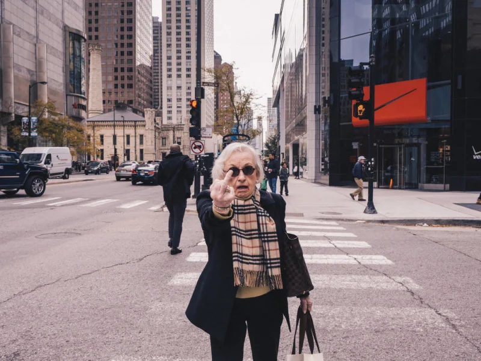

Capturing real-life experiences

Finding beauty in everyday life

In the moment images are images taken of people or subjects without being posed. They are in action and motion, often displaying everyday life and activities. They have become significant in brands showing pure intentions and relability.
Notice the details
around you
Pause and take
it all in
Remember the
little things
Capturing real-life experiences
Finding beauty in everyday life

Moments can pass quickly

Not every moment is easy to capture